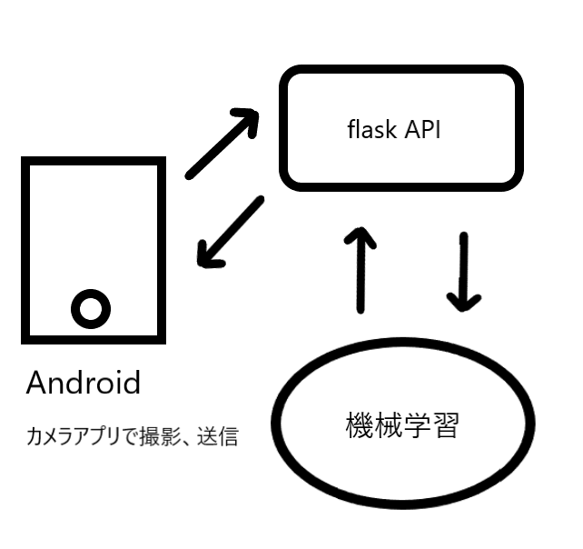
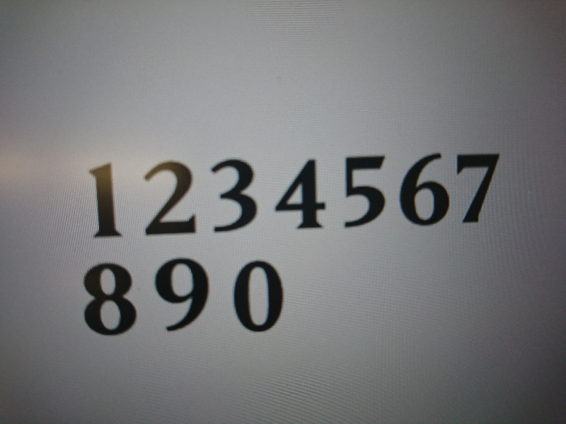
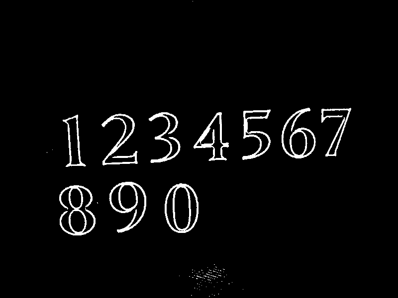
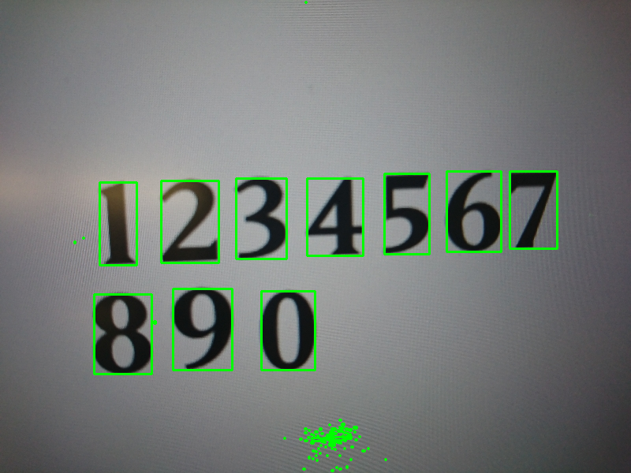
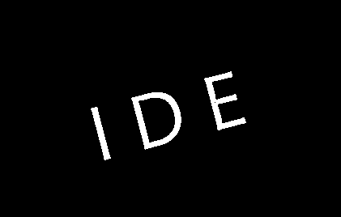
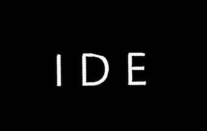
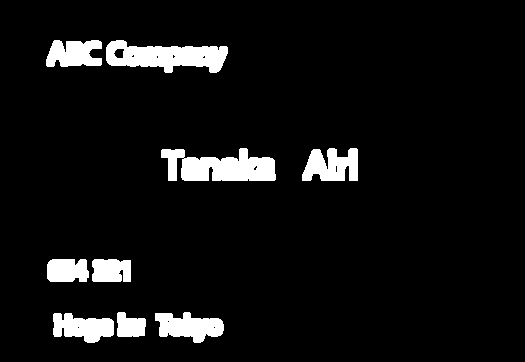
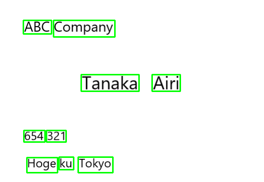

処理フロー
１．androidのカメラで画像を撮影
android studioを使い、javaで実装。
androidの標準カメラで写真を撮影し、Exif情報を取得し、回転処理を加える。
画像をflaskで作った機械学習APIにHttp通信でPOSTする。
レスポンスされたテキストをアプリ画面に表示する。
２．flaskで機械学習APIを作成、文字認識
flask(python)で機械学習APIを作成。
windowsの英数字フォントデータを加工し、学習させ、重みデータを得る。
英数字の混ざったテキストを同時に認識することは難しいと判断("l"と"1","Z"と"2"など)し、
英字、数字を別モデルで学習させ、2種類の重みデータを得た。
androidアプリで英字のみのテキストか、数字のみかをユーザーに選択してもらう。
選択されたボタンに応じて英字/数字の重みデータを読み込む。
#英字選択の場合
if weight == 'eng':
nlist = alphabet_model.predict(np.array(X))
for i, n in enumerate(nlist):
ans = n.argmax()
alphabet_dic = {i:chr(c) for i,c in enumerate(range(ord('A'),ord('Z')+1))}
alphabet_dic.update({i+26:chr(c) for i,c in enumerate(range(ord('a'),ord('z')+1))})
res = alphabet_dic.get(ans)
if res == None:
result.append(ans)
else:
result.append(res)
#数字選択の場合
elif weight == 'num':
nlist = numeral_model.predict(np.array(X))
for i, n in enumerate(nlist):
ans = n.argmax()
result.append(ans)
return result
学習時の認識精度は89.5%であった。
実機テストでは、画像のゆがみや明暗の差によるテキスト誤検出により認識精度が下がることが認められた。
後述の画像処理に重点を置き、より正しくテキストを検出させることで、実機テストでもこの認識精度に近づけることにした。
３．画像処理
(1) ぼかし、二値化、回転(画像のゆがみ補正)をOpenCVで実装。
これらの処理を通すことで、後の文字認識の精度を上げる。

↓(元画像)
↓(二値化し、ノイズを緩和した)
(二値化画像からテキストの外接矩形を検出し、元画像に書き出したもの)
#グレイスケール化、平滑化、二値化
gray = cv2.cvtColor(im, cv2.COLOR_BGR2GRAY)
blur = cv2.GaussianBlur(gray, (5, 5), 0)
thresh = cv2.adaptiveThreshold(blur,255,cv2.ADAPTIVE_THRESH_GAUSSIAN_C, 1, 9, 4)
adaptive Threshold(二値化処理)のBlock Size, C(減算定数)は試行錯誤して決定した。
小さすぎる・大きすぎる矩形の処理を飛ばし、左上から順に矩形を並べ替え、認識させる。
(2) クラスタリング処理の前に、AKAZEによる特徴点検出を行う。
テキスト一文字につき中点一つを取って、クラスタリングを行ったが、精度が思うように上がらなかった。
座標データが少なすぎることが原因と思われたので、AKAZEで特徴点座標を多く得ることにする。
特徴点を画像上にプロッティングしたもの。
これだけ座標があればうまくクラスタリングできそうだ。
#AKAZEで特徴点検出
kp_array = np.empty((0,2), int)
akaze = cv2.AKAZE_create()
keypoints = akaze.detect(thresh)
for marker in keypoints:
#akaze_im = cv2.drawMarker(im, tuple(int(i) for i in marker.pt),color=(0, 255, 0))
kp_array = np.concatenate([kp_array, np.array([marker.pt])], 0)
#VBGMM
bgmm = BayesianGaussianMixture(n_components=3,
weight_concentration_prior_type='dirichlet_process')
bgmm = bgmm.fit(kp_array)
cluster = bgmm.predict(kp_array)
参考url:https://scikit-learn.org/stable/modules/generated/sklearn.mixture.BayesianGaussianMixture.html
ここでは最大3つのクラスタになるようn_components = 3 とした。
(3) 次に、VBGMMによるクラスタリングを行う。
複数行にわたる文字列(改行あり文字列)の改行、空白を認識させるため、
VBGMM(Variational Bayesian Gaussian Mixture)によるクラスタリング処理を実装する。
ラベルデータやクラスタ数が不明でもクラスタリングが可能なためVBGMMを選択した。
複数行を認識させ、後述の処理で一行ずつ傾きを算出し、画像のゆがみを補正する。
(4) 次に、画像の傾きぶんだけ回転させる。
横向きの画像や天地逆の画像は、android側でExif情報を読み取って補正できるが、
撮影した文字列自体が斜めに傾いている場合は、予測精度が落ちてしまう。
そのため、検出した特徴点の座標から文字列の傾きを算出し、アフィン変換で回転補正をかけた。
def _img_rotate(im):
avg_gradient = 0
#特徴点のx,y座標を取り出す
for i in range(len(list_keypoints_x)):
kp_x = np.array(list_keypoints_x[i])
kp_y = np.array(list_keypoints_y[i])
#最小二乗法で直線の傾きを取得する
#a=傾き,b=切片
#傾きの絶対値の最大値を取得
ones = np.array([kp_x,np.ones(len(kp_x))])
ones = ones.T
a,b = np.linalg.lstsq(ones,kp_y)[0]
gradients.append(a)
max_gradient = gradients[np.argmax(np.abs(gradients))]
#画像回転
global thresh
rows,cols = thresh.shape
d = math.degrees(avg_gradient)
M = cv2.getRotationMatrix2D((cols/2,rows/2),d,1)
thresh = cv2.warpAffine(thresh,M,(cols,rows))

文字列が傾いた元画像を二値化した画像
それぞれのクラスタから算出した傾きa1 = -0.3416542173583762, a2=-0.2675808205604371, a3 = -15.331251696760448(単位:ラジアン,n_components = 3 の場合)
回転処理をかけた画像
回転処理の前にクラスタリング処理をはさむことで、
文字列が複数行にわたる画像も回転できるようになった。
４. 単語単位で矩形検出
次に、矩形認識処理に入る。
まず、単語単位で矩形を検出する。モルフォロジー処理 (dilation) をかけ、隣接した文字群をひとつの塊として矩形認識させる。

↑ dilation処理をかけた画像

↑ dilation処理をかけた画像に矩形認識を施した画像
一文字ずつ抽出する
単語単位で1文字ずつ抽出し、語尾に空白挿入処理 (後述) をする。
OpenCV4から同梱の "EAST" モデルライブラリを使用。
５. "i" の分割を統合
"i" を矩形認識する際に、上部と下部に分かれて認識されていしまう問題に対処するため、
矩形認識後、2つの矩形を結合させる処理をする。
def _get_integrate_rectangle(corners): # corners => 一文字ごとの矩形頂点
x_region = []
del_pt = []
pt_list = _tuple_to_list(corners)
for i,r in enumerate(pt_list): # 一文字ずつ取り出す
md = None
index, x, y, w, h, lower_left_y, right_corner = r
x_region.append(x+w/2)
#1つ前の中点とx軸がかさなっていればつなぐ
if i > 0:
md = x_region[i-1] # 1文字前の中点
if x < md < right_corner:
del_pt.append(i)
if del_pt:
for dl in reversed(del_pt):
print("===頂点変更===")
pt_list[dl][1] = max(pt_list[dl-1][1], pt_list[dl][1]) # x
pt_list[dl][3] = max(pt_list[dl-1][3], pt_list[dl][3]) # w
pt_list[dl][6] = pt_list[dl][1] + pt_list[dl][3] # x+w right_corner
pt_list[dl][2] = min(pt_list[dl-1][2], pt_list[dl][2]) # y
pt_list[dl][5] = max(pt_list[dl-1][5], pt_list[dl][5]) # lower_left_y
pt_list[dl][4] = pt_list[dl][5] - pt_list[dl][2] # h
#重なっている一つ前の矩形をcornersから全削除
del pt_list[dl-1]
tuple(pt_list)
return pt_list
# tupleをリストにキャスト
def _tuple_to_list(corners):
l = []
for i in corners:
t_list = list(i)
l.append(t_list)
return l

↑ 別矩形として検出された "i" の画像
↑ 矩形を結合した "i" の画像
６. 空白挿入
単語区切りで真っ黒な画像を挿入し認識させる。
breakline = np.zeros((28, 28))
breakline = breakline.reshape(28, 28, 1)
breakline = breakline.astype("float32") / 255
letters_list.append(breakline)
７. 予測
一文字ずつ予測器にかけ、最もprobabilityの大きい文字を採用する。
予測値が英数字ともに0.6以下のものを空白として処理する。
数値のprobabilityが英字のprobabilityより相対的に低い傾向があったため、単純比較ではすべて英字として表示されてしまっていた。
暫定措置として前の文字が空白でない場合に数値を優先して表示させることにした。
８. APIによる予測修正
このまでは予測結果が芳しくないので、Microsoft Azure の Bing SpellCheck API を使用し、予測結果を修正する。
チュートリアルに沿って設定した。
spell_checked_dict = _get_spellchecked_txt(txt) # txt => カンマで単語区切り済みの予測結果
for d in spell_checked_dict['flaggedTokens']:
token = d['token']
suggestions = d['suggestions']
for s in suggestions:
sug = s['suggestion']
#書き換え
result_text = result_text.replace(token, sug, 1)
#result_text = result_text.replace(',', ' ') # カンマ区切りを空白区切りにする
print(result_text)
# SpellCheck, return Class dict
def _get_spellchecked_txt(txt):
api_key = "xxxxxxxxxx"
res_text = txt
endpoint = "https://api.cognitive.microsoft.com/bing/v7.0/SpellCheck"
data = {'text': res_text}
params = {
'mkt':'en-us',
'mode':'proof'
}
headers = {
'Content-Type': 'application/x-www-form-urlencoded',
'Ocp-Apim-Subscription-Key': api_key,
}
response = requests.post(endpoint, headers=headers, params=params, data=data)
spell_checked_dict = response.json()
return spell_checked_dict
++++++++++++++++++++++++++++++++++++++++++++
・補足
重みデータ
Windows標準フォントを±20度傾けた二値画像で訓練し、英字 (大文字/小文字) データと、数字/記号データを作成。参考：https://github.com/kujirahand/book-python-scraping/blob/master/ch7/font_draw.py
モデル
モデルはkerasでCNNを作成。
#英字の認識モデル
from keras.models import Sequential
def build_model():
model = Sequential()
model.add(Conv2D(32, kernel_size=(3, 3),
activation='relu',
input_shape=(28,28,1)))
model.add(MaxPooling2D(pool_size=(2, 2)))
model.add(Flatten())
model.add(Dense(784, activation='relu'))
model.add(Dense(52, activation='softmax'))
参考: